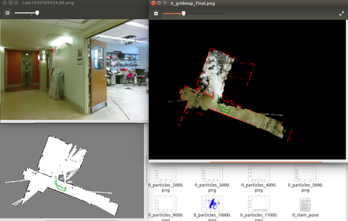
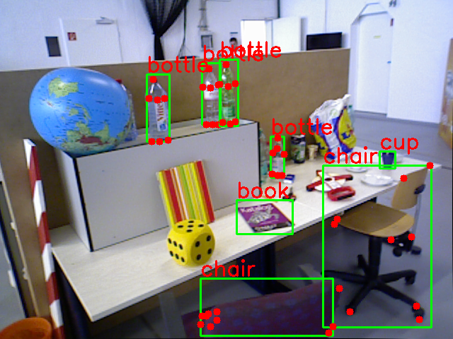
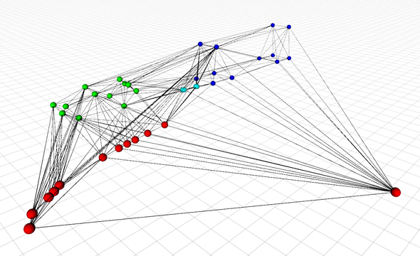

Projects
This is the page for some of my projects during first year of master at UCSD:
Cheetah: Foreground Segmentation
CamOILi: Camera Inertial LiDAR Particle Filter SLAM
Mario RL: Playing Super Mario in policy gradient method
Yolokey: Object detection and keypoint detection in ROS
RSS2018 Spotlight: Dense Spatial Segmentation from Sparse Semantic Information
Cheetah: Foreground Segmentation
Given training set of foreground/background, how to tell where is the cheetah.


CamOILi: Camera Inertial LiDAR Particle Filter SLAM
If we have RGBD camera, IMU and LiDAR, how can our robot realize the world?
|  | Raw image, occupancy grid map and 2d reconstruction |
Mario RL: Playing Super Mario in policy gradient method
 |
Screenshot of live game |
 |
Reward received among episodes of games |
Yolokey: Object detection and keypoint detection in ROS
An tensorflow implementation of stacked hourglass network to detect category-specific keypoint and thanks to the yolo-ros package.
|  |
RSS2018 workshop spotlight
Qiaojun Feng, Yue Meng, Nikolay Atanasov, Dense Spatial Segmentation from Sparse Semantic Information [pdf]
Abstract — This paper develops an environment representation that affords reasoning about the occupancy of space, necessary for safe navigation, and about the identity of objects, necessary for complex task interpretation.
 |
Semantic perception in front end |
|  | Reconstruction |